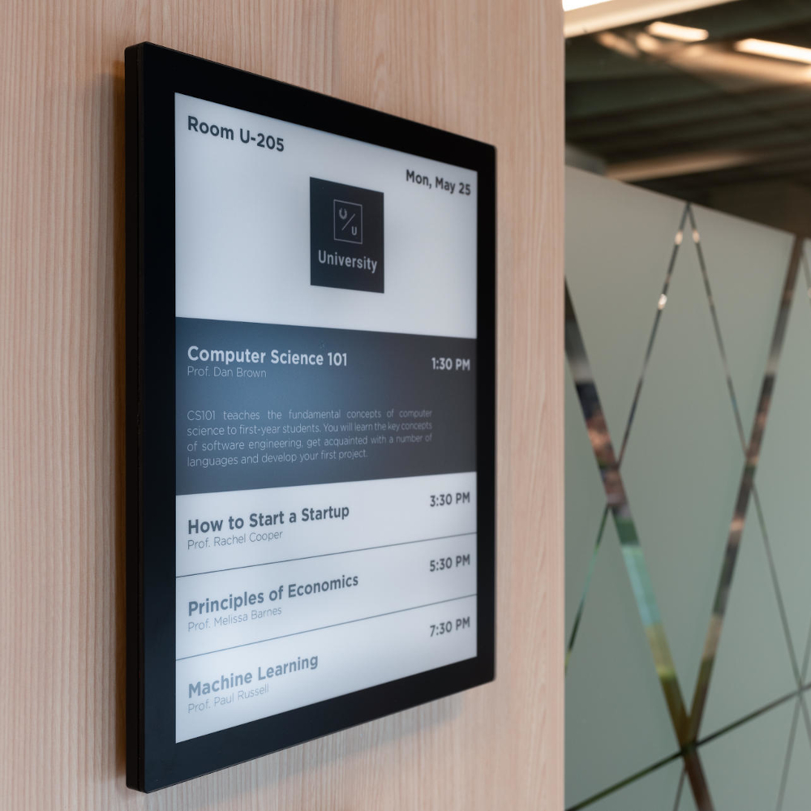

Credit Card Payoff Forecaster
Calculates payments to eliminate debt, using loops, selection, and input validation. Exported results as a simple report.
Source

ePaper Classroom Signs (Group)
Low-power signage using e-paper displays. Roles: firmware setup, content pipeline, and UX tests.
Case StudySecure Software Development Labs
Practiced SSRF/SQLi prevention, threat modeling, and secure coding patterns aligned with course ITE 379.
Write-up